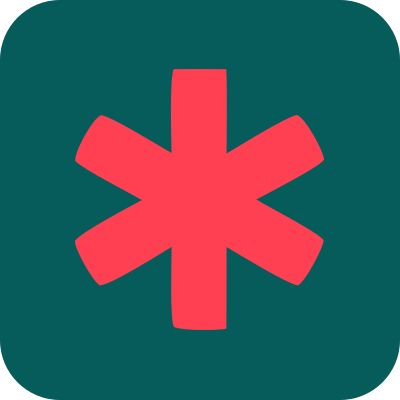

<!doctype html>
<html lang="ru">
  <head>
    <meta charset="utf-8" />
    <title>Превью отчета об ошибках Чистовика</title>
    <style>
      :root {
        --accent-color: #065c5b;
        --accent-color-hover: #054a49;
        --preview-bg: #f1f2f4;
        --figma-color-bg: #ffffff;
        --figma-color-bg-brand: var(--accent-color);
        --figma-color-bg-brand-hover: var(--accent-color-hover);
        --figma-color-bg-hover: #f5f5f5;
        --figma-color-bg-secondary: #f7f7f5;
        --figma-color-border: #dbdbd9;
        --figma-color-border-brand: var(--accent-color);
        --figma-color-icon: #141414;
        --figma-color-text: #141414;
        --figma-color-text-disabled: #b8b8b8;
        --figma-color-text-onbrand: #ffffff;
        --figma-color-text-secondary: #757575;
        --figma-color-bg-note: #f0f4f3;
        color-scheme: light;
        font-family: Manrope, Inter, -apple-system, BlinkMacSystemFont, "Segoe UI", sans-serif;
      }

      * {
        box-sizing: border-box;
      }

      body {
        background: var(--preview-bg);
        color: var(--figma-color-text);
        margin: 0;
        min-height: 100vh;
        padding: 32px;
      }

      .preview-grid {
        display: grid;
        gap: 28px;
        grid-template-columns: repeat(2, minmax(0, 640px));
        justify-content: center;
      }

      .example {
        display: grid;
        gap: 10px;
      }

      .example-title {
        color: var(--figma-color-text-secondary);
        font-size: 12px;
        font-weight: 700;
        letter-spacing: 0;
        line-height: 16px;
      }

      .window {
        background: var(--figma-color-bg);
        border: 1px solid var(--figma-color-border);
        border-radius: 14px;
        box-shadow: 0 18px 48px rgba(0, 0, 0, 0.14);
        overflow: hidden;
        max-width: 100%;
        width: 640px;
      }

      .window-bar {
        align-items: center;
        border-bottom: 1px solid var(--figma-color-border);
        display: grid;
        gap: 10px;
        grid-template-columns: 24px 1fr 24px;
        height: 52px;
        padding: 0 14px;
      }

      .window-icon {
        height: 24px;
        overflow: hidden;
        width: 24px;
      }

      .window-icon img {
        display: block;
        height: 100%;
        width: 100%;
      }

      .window-title {
        font-size: 16px;
        font-weight: 700;
        line-height: 20px;
      }

      .window-close {
        color: var(--figma-color-text);
        font-size: 30px;
        font-weight: 300;
        line-height: 24px;
        text-align: center;
      }

      .report {
        display: grid;
        grid-template-rows: auto 1fr;
        height: 480px;
        min-height: 480px;
      }

      .report-intro {
        border-bottom: 1px solid var(--figma-color-border);
        display: grid;
        gap: 6px;
        padding: 16px 16px 14px;
      }

      .report-title {
        font-size: 16px;
        font-weight: 700;
        line-height: 20px;
        margin: 0;
      }

      .report-text {
        color: var(--figma-color-text-secondary);
        font-size: 12px;
        font-weight: 400;
        line-height: 16px;
        margin: 0;
      }

      .report-layout {
        display: grid;
        grid-template-columns: 244px 1fr;
        min-height: 0;
      }

      .result-list {
        background: var(--figma-color-bg);
        border-right: 1px solid var(--figma-color-border);
        display: grid;
        grid-template-rows: auto 1fr;
        min-width: 0;
      }

      .list-body {
        overflow: hidden;
        padding: 0;
      }

      .result-item {
        appearance: none;
        background: transparent;
        border: 0;
        border-radius: 0;
        color: inherit;
        cursor: default;
        display: grid;
        gap: 3px;
        min-height: 58px;
        padding: 7px 16px;
        text-align: left;
        width: 100%;
      }

      .result-item.active {
        background: var(--figma-color-bg-note);
      }

      .text-preview {
        -webkit-box-orient: vertical;
        -webkit-line-clamp: 2;
        display: -webkit-box;
        font-size: 12px;
        font-weight: 400;
        line-height: 16px;
        overflow: hidden;
      }

      .layer-name {
        color: var(--figma-color-text-secondary);
        font-size: 11px;
        font-weight: 400;
        line-height: 15px;
        overflow: hidden;
        text-overflow: ellipsis;
        white-space: nowrap;
      }

      .detail {
        display: grid;
        grid-template-rows: 1fr auto;
        min-width: 0;
      }

      .detail-body {
        align-content: start;
        display: grid;
        gap: 8px;
        overflow: hidden;
        padding: 12px 16px 8px;
      }

      .detail-heading {
        display: grid;
        gap: 0;
      }

      .detail-title {
        font-size: 16px;
        font-weight: 700;
        letter-spacing: 0;
        line-height: 20px;
        margin: 0;
      }

      .code {
        color: var(--figma-color-text-secondary);
        font-size: 11px;
        font-weight: 400;
        line-height: 15px;
      }

      .text-link {
        color: var(--figma-color-bg-brand);
        font-weight: 700;
        text-decoration: none;
      }

      .section {
        display: grid;
        gap: 6px;
      }

      .section-title {
        color: var(--figma-color-text);
        font-size: 12px;
        font-weight: 700;
        line-height: 16px;
      }

      .section-text,
      .suggestions li {
        color: var(--figma-color-text-secondary);
        font-size: 12px;
        font-weight: 400;
        line-height: 16px;
      }

      .section-text,
      .suggestions {
        margin: 0;
      }

      .suggestions {
        display: grid;
        gap: 6px;
        padding: 0;
      }

      .suggestions li {
        list-style: none;
        padding-left: 17px;
        position: relative;
      }

      .suggestions li::before {
        color: var(--figma-color-bg-brand);
        content: "✦";
        font-size: 10px;
        left: 0;
        line-height: 16px;
        position: absolute;
        top: 0;
      }

      .detail-footer {
        align-items: center;
        display: flex;
        justify-content: flex-end;
        min-height: 54px;
        padding: 6px 16px 14px;
      }

      .detail-footer.empty {
        display: none;
      }

      .button {
        appearance: none;
        background: var(--figma-color-bg-brand);
        border: 0;
        border-radius: 8px;
        color: var(--figma-color-text-onbrand);
        font-size: 14px;
        font-weight: 500;
        line-height: 18px;
        min-height: 40px;
        padding: 0 14px;
        white-space: nowrap;
      }

      .button.secondary {
        background: var(--figma-color-bg-note);
        color: var(--figma-color-bg-brand);
      }

      @media (max-width: 1380px) {
        .preview-grid {
          grid-template-columns: minmax(0, 640px);
        }
      }

      @media (max-width: 760px) {
        body {
          padding: 16px;
        }

        .preview-grid {
          grid-template-columns: minmax(0, 100%);
        }

      }
    </style>
  </head>
  <body>
    <main class="preview-grid" id="previewGrid"></main>
    <script>
      const reportText = 'Нажмите на строчку, чтобы посмотреть подсказки. Если исправить не выходит, пришлите Ане Акуловой в ТГ (<a class="text-link" href="https://t.me/akanna" target="_blank" rel="noreferrer">@akanna</a>) скриншот и ссылку на файл — будем разбираться ♡';
      const defaultPreview = '... пункт Умрёшь — начнёшь опять сначала. И повторится всё, как встарь...';
      const defaultLayer = 'hero / quote / line 2';

      const errors = [
        {
          code: 'collect_nodes',
          title: 'Поиск текстовых слоёв',
          general: true,
          what: 'Плагин сломался ещё до обработки текста — не получилось собрать все текстовые слои при обходе выбранного фрейма, страницы, заблокированных или скрытых слоёв.',
          suggestions: [
            'Запустить типограф на одном текстовом слое.',
            'Снять выделение и попробовать обработать страницу.',
            'Проверить скрытые и заблокированные объекты в выделении.'
          ]
        },
        {
          code: 'unknown',
          title: 'Неизвестная ошибка',
          general: true,
          what: 'Мы не предусмотрели такой тип ошибки. Плагин понял, что что-то пошло не так, но пока не смог отнести проблему к понятному сценарию.',
          suggestions: [
            'Повторить запуск на одном текстовом слое.',
            'Перезапустить Figma, если ошибка повторяется.',
            'Прислать скриншот и ссылку на файл — это поможет добавить понятную подсказку.'
          ]
        },
        {
          code: 'read_text',
          title: 'Чтение текста',
          what: 'Плагин нашёл сам текстовый слой, но почему-то не смог получить текст. Такое бывает из-за сбоев или когда макет внезапно поменялся.',
          suggestions: [
            'Открыть слой в макете и проверить, что текст всё ещё на месте.',
            'Скопировать текст в новый слой и запустить типограф ещё раз.',
            'Если слой внутри компонента или инстанса, попробовать обработать его копию.'
          ]
        },
        {
          code: 'read_development_markers',
          title: 'Поиск служебных звёздочек',
          layer: 'developer handoff / note',
          preview: 'В режиме разработки пробелы отмечаются * и должны быть видны',
          what: 'Плагин не смог проверить, какие звёздочки в режиме «Для разработки» были служебными, а какие пользовательскими.',
          suggestions: [
            'Запустить этот слой в режиме «Для красоты».',
            'Проверить, нет ли в тексте обычных пользовательских звёздочек.',
            'Скопировать текст в новый слой, если повторный запуск снова падает.'
          ]
        },
        {
          code: 'clean_text',
          title: 'Применение правил типографики',
          preview: 'Он сказал "Use clean typography mode" и улыбнулся',
          layer: 'modal / description',
          what: 'Плагин получил текст, но сломался во время применения правил типографики: кавычек, тире, пробелов, чисел или других замен.',
          suggestions: [
            'Запустить типограф на копии этого слоя.',
            'Проверить необычные символы рядом с кавычками, числами, тире или пробелами.',
            'Прислать пример текста — так мы поймём, какое правило нужно докрутить.'
          ]
        },
        {
          code: 'load_fonts',
          title: 'Загрузка шрифтов',
          what: 'Плагин нашёл текстовый слой, но не смог загрузить один из шрифтов. Figma не разрешает менять текст, пока шрифты слоя не загружены.',
          suggestions: [
            'Проверить, нет ли в слое missing font.',
            'Заменить недоступный шрифт на доступный.',
            'Скопировать текст в новый слой и запустить типограф ещё раз.'
          ]
        },
        {
          code: 'capture_styles',
          title: 'Сохранение оформления',
          preview: 'Стоимость 1000 руб. в месяц, первые 30 дней бесплатно',
          layer: 'pricing / card / caption',
          what: 'Плагин не смог сохранить оформление текста перед заменой: шрифты, цвета, списки, отступы или стили внутри слоя.',
          suggestions: [
            'Проверить, не смешаны ли в слое недоступные шрифты или стили.',
            'Запустить типограф на копии слоя.',
            'Если слой очень сложный, временно разделить его на несколько текстовых слоёв.'
          ]
        },
        {
          code: 'build_style_map',
          title: 'Сопоставление оформления',
          preview: 'Скидка 20% действует только до 15 мая — потом цена изменится',
          layer: 'promo / legal note',
          what: 'Плагин обработал текст, но не смог сопоставить старый и новый текст, чтобы вернуть оформление в правильные места.',
          suggestions: [
            'Проверить слой со сложным mixed styles: разными шрифтами, цветами или ссылками внутри текста.',
            'Разделить слишком сложный текст на несколько слоёв.',
            'Запустить типограф на копии, чтобы не рисковать оформлением.'
          ]
        },
        {
          code: 'write_text',
          title: 'Запись текста',
          preview: 'Адрес: г. Москва, ул. Ленина, д. 5',
          layer: 'contacts / address',
          what: 'Плагин подготовил новый текст, но Figma не дала записать его обратно в слой.',
          suggestions: [
            'Проверить, не заблокирован ли слой или его родительский фрейм.',
            'Проверить доступность шрифтов в слое.',
            'Скопировать текст в новый слой и обработать копию.'
          ]
        },
        {
          code: 'restore_styles',
          title: 'Восстановление оформления',
          preview: 'Первый пункт списка, второй пункт списка и важное примечание',
          layer: 'checklist / item',
          what: 'Текст изменился, но плагин не смог вернуть часть оформления: шрифты, цвета, списки, отступы или интервалы.',
          suggestions: [
            'Проверить результат в макете и откатить действие, если оформление важно.',
            'Запустить типограф на копии слоя.',
            'Обратить внимание на списки, отступы и разные стили внутри одной строки.'
          ]
        },
        {
          code: 'check_development_marker_styles',
          title: 'Проверка служебных звёздочек',
          layer: 'developer handoff / old note',
          preview: 'Кнопка должна быть на*месте, а отступ — 16*px',
          what: 'Плагин не смог проверить по цвету и стилю, какие звёздочки уже были служебными маркерами неразрывных пробелов.',
          suggestions: [
            'Запустить слой в режиме «Для красоты».',
            'Проверить, не менялись ли вручную красные звёздочки после прошлого запуска.',
            'Если нужно, скопировать текст в новый слой без старых служебных данных.'
          ]
        },
        {
          code: 'apply_development_marker_styles',
          title: 'Окраска служебных звёздочек',
          layer: 'developer handoff / spacing',
          preview: 'Москва*— столица, а 20*°C — комфортная температура',
          what: 'Плагин вставил служебные звёздочки вместо неразрывных пробелов, но не смог покрасить их красным.',
          suggestions: [
            'Проверить, загрузились ли все шрифты слоя.',
            'Запустить типограф ещё раз на копии слоя.',
            'Если цвет звёздочек не важен, использовать режим «Для красоты».'
          ]
        },
        {
          code: 'sync_development_marker_data',
          title: 'Сохранение данных служебных звёздочек',
          layer: 'developer handoff / component text',
          preview: '№*5, §*12 и ©*2025 должны остаться понятными разработчику',
          what: 'Плагин не смог сохранить или очистить служебные данные о звёздочках режима «Для разработки».',
          suggestions: [
            'Запустить типограф повторно и проверить, не появилась ли ошибка снова.',
            'Если слой ведёт себя странно, скопировать текст в новый слой.',
            'Для финальной версии текста запустить режим «Для красоты».'
          ]
        }
      ];

      function renderSuggestions(items) {
        return items.map((item) => `<li>${item}</li>`).join('');
      }

      function renderWindow(error) {
        const reportTitle = error.general ? 'Не удалось запустить типограф' : 'Не удалось обработать 1 слой';
        const preview = error.general ? 'Общая ошибка запуска' : error.preview || defaultPreview;
        const layer = error.general ? 'Нет конкретного текстового слоя' : error.layer || defaultLayer;
        const footer = error.general
          ? '<footer class="detail-footer empty" aria-hidden="true"></footer>'
          : '<footer class="detail-footer"><button class="button" type="button">Показать в макете</button></footer>';

        return `
          <section class="example" aria-label="${error.title}">
            <div class="example-title">${error.title} · ${error.code}</div>
            <div class="window">
              <div class="window-bar">
                <div class="window-icon">
                  
                </div>
                <div class="window-title">Чистовик</div>
                <div class="window-close">×</div>
              </div>

              <div class="report">
                <header class="report-intro">
                  <h1 class="report-title">${reportTitle}</h1>
                  <p class="report-text">${reportText}</p>
                </header>

                <div class="report-layout">
                  <aside class="result-list" aria-label="Список ошибок">
                    <div class="list-body">
                      <button class="result-item active" type="button">
                        <span class="text-preview">${preview}</span>
                        <span class="layer-name">${layer}</span>
                      </button>
                    </div>
                  </aside>

                  <section class="detail" aria-label="Подробности ошибки">
                    <div class="detail-body">
                      <div class="detail-heading">
                        <h1 class="detail-title">${error.title}</h1>
                        <div class="code">Код: ${error.code}</div>
                      </div>

                      <div class="section">
                        <div class="section-title">Что случилось</div>
                        <p class="section-text">${error.what}</p>
                      </div>

                      <div class="section">
                        <div class="section-title">Что можно попробовать</div>
                        <ul class="suggestions">${renderSuggestions(error.suggestions)}</ul>
                      </div>
                    </div>

                    ${footer}
                  </section>
                </div>
              </div>
            </div>
          </section>
        `;
      }

      document.getElementById('previewGrid').innerHTML = errors.map(renderWindow).join('');
    </script>
    </main>
  </body>
</html>
